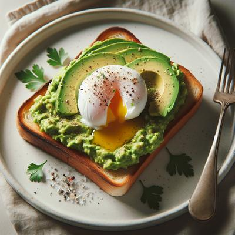

"A nutritious and satisfying breakfast featuring creamy avocado and a perfectly poached egg on crisp toast."
Recipe submitted by Manasi

Ingredients
2 slices whole-grain bread
1 ripe avocado
2 large eggs
1 tbsp white vinegar (for poaching)
Salt and pepper to taste
1 tsp lemon juice
Red pepper flakes (optional)
Fresh herbs (optional, for garnish)
Calories
250 kcal (per serving)
80 kcal (1 poached egg)
160 kcal (1 medium avocado)
70 kcal (1 slice whole-grain bread)
Directions
Toast the whole-grain bread until golden and crispy.
Cut the avocado in half, remove the pit, and mash the flesh with lemon juice, salt, and pepper.
To poach the eggs, bring a pot of water to a gentle simmer, add white vinegar, and carefully slide in the eggs. Cook for 3-4 minutes until the whites are set but the yolks remain runny.
Spread the mashed avocado evenly on the toasted bread slices.
Place a poached egg on top of each avocado toast and season with additional salt, pepper, and red pepper flakes if desired.